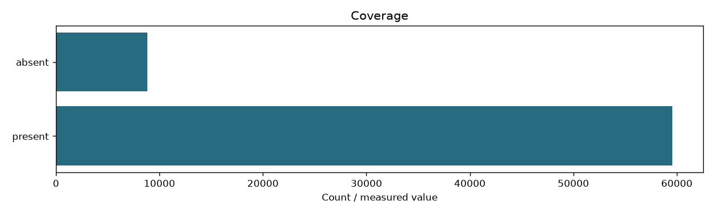

| content_sha256 | a7cb0385e2f57c75c70b79bc4ba19447408208bd1d81b852a486c8c2546ef921 |
|---|---|
| fingerprint | 8a81be6e4f7c0fc4a0cf5430658651c7e01d91166594771dfa3428d168fe3088 |
| documents | 68414 |
| passages | 61511 |
| zone | headings |
| input_fingerprint | f15488c8b98dc3f6f7f38152db2226dfef073173cd184609831edea290884f26 |
| documents_present | 59579 |
